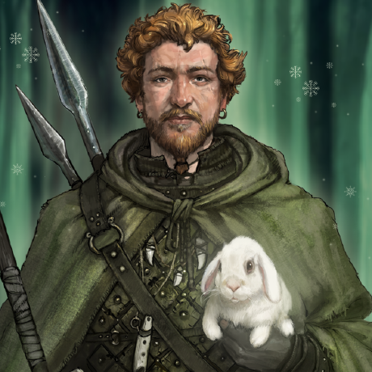

#
Rails

Ruby on Rails (Rails) is a web application framework written in Ruby. It is meant to help simplify the building of complex websites.
Here are 9,003 public repositories matching this topic...
A platform for community discussion. Free, open, simple.
-
Updated
34 seconds ago - Ruby
Flexible authentication solution for Rails with Warden.
-
Updated
26 days ago - Ruby
A privacy-aware, distributed, open source social network.
-
Updated
2 days ago - Ruby
EmailZen
commented
on 1 Apr
Context
On mobile devices, footer section text should be adjusted to the center, contrary to the desktop where it is adjusted to the left.
Please refer to the screenshot attached.
Expected Behavior
Store name should be adjusted to the center of the footer on mobile devices.
Actual Behavior
The store name is not adjusted to the center of the footer on mobile devices.
Steps
sojan-official
commented
yesterday
Add ability for the conversation create API endpoint to accept an agent id & team id on creation
- if agent id is provided, round-robin is not triggered
- if team id is provided
- team_id attribute is updated
- if agent id provided
- if the agent belongs to a team, the agent id is preserved
- if the agent doesn't belong to a team, auto-assign to an agent in the team
The administration framework for Ruby on Rails applications.
ruby
rails
stackoverflow
activeadmin
codeclimate-badge
travis-badge
gratipay
admin-ui
codecov-badge
arbre
gratipay-badge
inch-badge
rubygems-badge
gratipay-button
-
Updated
13 hours ago - Ruby
-
Updated
11 hours ago - Ruby
Forms made easy for Rails! It's tied to a simple DSL, with no opinion on markup.
-
Updated
on 17 Jun - Ruby
A library for setting up Ruby objects as test data.
-
Updated
7 days ago - Ruby
chasenyc
commented
on 18 Apr 2018
Steps to Reproduce the Problem
If buffalo fails midway through generating a resource it does not undo what it has done in app.go. This is a very minor issue and was easy to resolve by deleting the duplicated resources from app.go. If I wasn't so new to go I'd be attempting to see if I could make a PR to fix this issue.
![screen shot 2018-04-18 at 10 09 49 am](https://user-images.git
eliotsykes
commented
on 3 Oct 2019
I'm sorry to post an issue that is missing crucial evidence, but some debugging of a recent config loading bug makes me suspect that the react-rails railtie.rb may be modifying the load order of initializers, and preventing the values in Rails.application.config being as expected.
Whether this happens or not appears to be partly dependent on where in the Gemfile the react-rails gem is l
A static analysis security vulnerability scanner for Ruby on Rails applications
ruby
rails
security
security-audit
static-analysis
security-vulnerability
vulnerabilities
brakeman
security-tools
-
Updated
3 days ago - Ruby
Pagination library for Rails, Sinatra, Merb, DataMapper, and more
-
Updated
on 10 May - Ruby
Catches mail and serves it through a dream.
ruby
rails
rubygems
development
mail
server
devtools
campaign-monitor
smtp
mailcatcher
rvm
tfg
dream
mailcatcher-github
-
Updated
3 hours ago - Ruby
fiedl
commented
on 8 May 2017
I'm not sure if this is the right approach and maybe I've not understood this new part of the pipeline, yet, but:
Suppose, the major part of the app code lives inside a rails engine including all javascripts. And there are several main apps using that engine. The main apps only contain some layout changes and some minor patches.
Therefore, in order to integrate the webpacker gem into this se
A Rails engine that helps you put together a super-flexible admin dashboard.
-
Updated
26 minutes ago - Ruby

PragTob
commented
on 5 Jul 2020
We have a problem: if files aren't loaded/required we don't have branch data. If they are added through track_files we give it 0/0 branches which we show as 100% coverage (all possible branches are covered).
That math is "wrong" though here because there are branches but we don't know what they are. We should probably count total branches here as "unkown" and establish that in our "math unive
-
Updated
yesterday - Ruby
An extendable Ruby on Rails CMS that supports Rails 6.0+
-
Updated
7 days ago - Ruby
kennyadsl
commented
on 19 Mar
A while ago, we converted API controller specs into requests specs, see #2052. But those specs still have references from their old "life" that we can clean a little bit with a small effort.
In fact, their filenames still have the _controller_ part, which makes no sense now. Eg. solidus/api/spec/requests/spree/api/addresses_controller_spec.rb
Also, they contain references to the previo
-
Updated
yesterday - Ruby
Created by David Heinemeier Hansson
Released December 13 2005
- Organization
- rails
- Website
- rubyonrails.org
- Wikipedia
- Wikipedia
Action Dispatch’s host authorization middleware takes two options,
:excludesand:response_app, which are populated fromconfig.host_authorization.excludesandconfig.host_authorization.response_app, respectively. Unless I’m mistaken, those options need to be added to this guide.